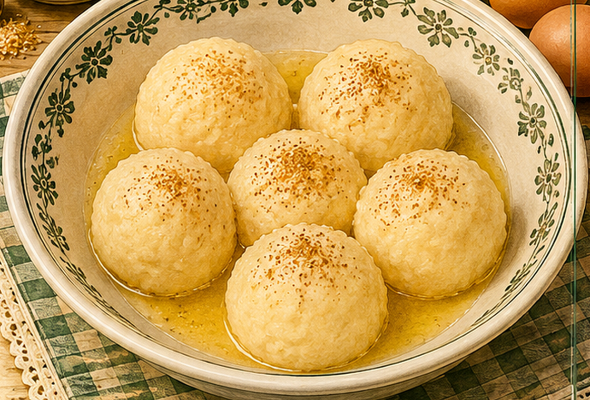

Grießklöße
Lockere Grießklöße aus Milch, Grieß, Ei, Butter und Muskat.

Originale Überlieferung
Ein halber Liter Milch wird mit Butter und Salz aufgekocht. Ein Viertelliter Grieß wird eingerührt. Nach dem Abkühlen kommen zwei ganze Eier und Muskat hinzu. Aus der Masse werden Klöße geformt und in Salzwasser gar gezogen.
Moderne Übertragung
Grieß wird in heiße Milch eingerührt und zu einem festen Brei abgebrannt. Nach kurzem Abkühlen werden Eier und Muskat eingearbeitet. Die Klöße ziehen anschließend in Salzwasser.
Zutaten
- 500 ml Milch
- etwa 180–200 g Grieß
- 2 Eier
- 1 EL Butter
- Salz
- Muskat
Zubereitung
- Milch mit Butter und Salz aufkochen.
- Grieß unter Rühren einrieseln lassen und rühren, bis sich die Masse vom Topfboden löst.
- Etwas abkühlen lassen, dann Eier und Muskat gründlich einarbeiten.
- Mit feuchten Händen oder zwei Löffeln Klöße formen.
- In siedendem Salzwasser gar ziehen lassen, bis sie an die Oberfläche steigen.